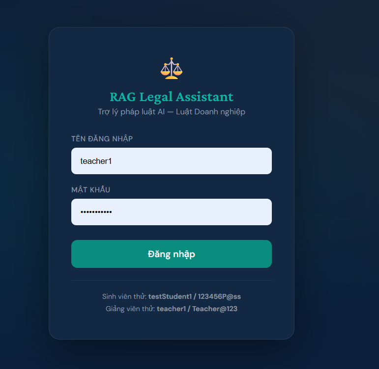
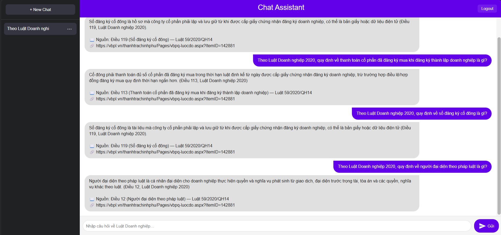
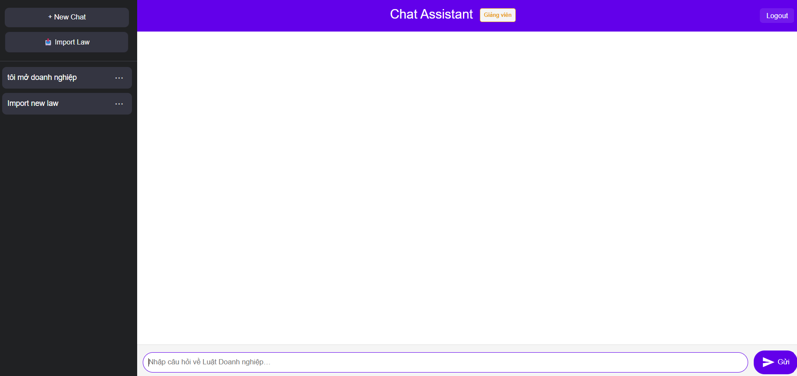
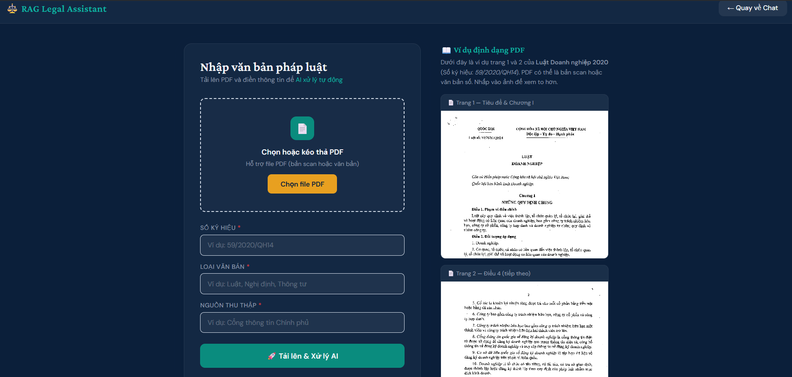
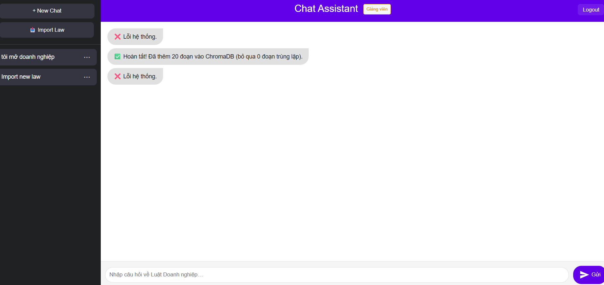

Hệ thống trợ lý pháp lý thông minh sử dụng kỹ thuật RAG (Retrieval-Augmented Generation), hỗ trợ tra cứu văn bản luật bằng ngôn ngữ tự nhiên.
| Thành phần | Công nghệ |
|---|---|
| Backend | FastAPI (Python 3.10+), chạy bằng Uvicorn |
| Vector Database | ChromaDB |
| Embedding Model | BAAI/bge-m3 (HuggingFace, đa ngôn ngữ — đổi từ bge-small-en-v1.5 ngày 2026-07-25, xem mục 14) |
| LLM | Groq — llama-3.1-8b-instant |
| OCR tiếng Việt | VietOCR (vgg_transformer) |
| Trích xuất PDF/DOCX | pypdf (text số) + pdf2image/Poppler (OCR scan) + python-docx |
| Nhận diện dòng văn bản | OpenCV |
| Xử lý Excel | pandas + openpyxl |
| Database ứng dụng | SQLite (chat.db) |
[1] Câu hỏi người dùng
↓
[2] Kiểm tra ngoài phạm vi (ly hôn, hình sự, đất đai, thuế…) → từ chối sớm nếu không thuộc Luật Doanh nghiệp
↓
[3] Kiểm tra câu hỏi "meta" về hệ thống (VD: "database đang lưu bao nhiêu điều luật?") → trả lời trực tiếp, bỏ qua RAG
↓
[4] Trích xuất chủ đề (topic extraction)
→ Nếu nhận ra chủ đề: bỏ qua bước viết lại → tiết kiệm 1 lần gọi API
↓
[5] Viết lại câu hỏi (query rewrite) — chỉ khi không trích được chủ đề
↓
[6] Tìm kiếm ngữ nghĩa trong ChromaDB (topic-aware retrieval)
→ Ưu tiên khớp metadata theo chủ đề, fallback sang semantic search có ngưỡng độ tương đồng
↓
[7] Xếp hạng lại tài liệu (rerank)
→ Tính điểm từ: từ khóa + cụm từ + số điều luật + nguồn KB + từ khóa admin
gắn cho nguồn (mục 13.8, thêm 2026-07-28)
↓
[8] Phân loại câu hỏi (definition / condition / procedure / general)
↓
[9] Xây dựng prompt có căn cứ pháp lý + gọi Groq LLM (có retry tự động khi rate-limit)
↓
[10] Làm sạch câu trả lời (loại bỏ chào hỏi, dòng trùng lặp)
↓
[11] Gắn trích dẫn điều luật chính + nguồn tham khảo phụ (📖/📎) + đường dẫn vbpl.vn
→ Trích dẫn (so_ky_hieu) chỉ được in ra nếu đang thực sự có mặt trong ChromaDB
lúc đó (whitelist CITATION_SOURCE, xem mục 13.4) — chống trích dẫn "ma" từ
văn bản đã bị xoá hoặc chưa từng được import
Hệ thống nạp dữ liệu vào ChromaDB qua 2 luồng import độc lập, cùng dùng chung một vector store: Văn bản luật (mục 6), Văn bản tình huống (mục 7). (Cập nhật 2026-07-28: bỏ luồng thứ 3 — Dataset Excel, mục 8 — khỏi ChromaDB do rủi ro data leakage thật đã xác minh; giờ Dataset chỉ còn là file kiểm thử trên đĩa, xem mục 14.) Admin quản lý cả 3 loại (2 luồng nạp ChromaDB + Dataset trên đĩa) qua trang Manage Law (mục 11).
poppler/ của dự án (dùng khi OCR PDF scan)pip install -r requirements.txt
Tạo file groqkey.txt tại thư mục gốc dự án, dán API key vào:
gsk_xxxxxxxxxxxxxxxxxxxxxxxxxxxxxxxx
Có thể dán nhiều key, phân tách bằng ;, để hệ thống tự xoay vòng khi một key bị rate-limit (xem engine/groq_keys.py):
gsk_key_thu_nhat;gsk_key_thu_hai;gsk_key_thu_ba
# Xác nhận Python đúng phiên bản
python --version
# Xác nhận Groq key hợp lệ
python -c "print(open('groqkey.txt').read().strip()[:8] + '...')"
python app.py
Nội bộ app.py tự gọi Uvicorn (uvicorn.run("app:app", host="127.0.0.1", port=8000)), nên không cần chạy lệnh uvicorn riêng. Terminal hiển thị:
INFO: Uvicorn running on http://127.0.0.1:8000
Mở trình duyệt và truy cập: http://127.0.0.1:8000
Lần đầu khởi động: Hệ thống tự động tạo file
chat.dbvà seed 3 tài khoản mặc định (học sinh, giáo viên, admin). ChromaDB cũng sẽ tải embedding model từ HuggingFace (cần kết nối Internet lần đầu —BAAI/bge-m3khoảng 2GB, chỉ tải một lần rồi cache).engine/rag_engine.pycòn tự chạy 3 tác vụ bảo trì lúc khởi động: làm mới whitelist trích dẫn (refresh_citation_sources), gắn nhãn nguồn gốc cho các đoạn dữ liệu cũ chưa được đánh dấu (backfill_import_source_tags, xem mục 13.4), và gắn nhãn người nhập mặc định"admin1"cho các đoạn nhập trước khi có tính năng theo dõi người nhập (backfill_importer_tags) — cả ba đều an toàn khi chạy lại nhiều lần.
Hệ thống có 3 vai trò, phân biệt bằng cột role trong bảng users (0 = Student, 1 = Teacher, 2 = Admin). Admin kế thừa toàn bộ quyền của Teacher.
| Vai trò | Tên đăng nhập | Mật khẩu | Quyền |
|---|---|---|---|
| Học sinh | testStudent1 |
123456P@ss |
Hỏi đáp RAG |
| Giáo viên | teacher1 |
Teacher@123 |
Hỏi đáp + Import văn bản luật/tình huống/dataset + Đánh giá RAG |
| Admin | admin1 |
Admin@123 |
Toàn bộ quyền Giáo viên + Quản lý tài khoản + Quản lý văn bản (xoá dữ liệu đã import) |
Các tài khoản mặc định chỉ được tạo một lần, khi bảng
usershoàn toàn trống lúc khởi động. Nếu bảng đã có dữ liệu, cần dùng chức năng Import tài khoản hoặc thêm thủ công (mục 10) để có tài khoản admin.
http://127.0.0.1:8000
testStudent1)
| Thao tác | Cách thực hiện |
|---|---|
| Đổi tên chat | Nhấp đúp vào tiêu đề chat ở sidebar |
| Xóa chat | Nhấn icon thùng rác bên cạnh tên chat |
| Chuyển chat | Nhấn vào tên chat khác trong sidebar |
| Xem lại lịch sử | Nhấn vào chat có sẵn — tin nhắn được load từ SQLite |
Chat của học sinh và giáo viên tách biệt hoàn toàn (cột
roletrong bảngchats), kể cả khi cùng mộtuser_id.Mới 2026-08-08: câu hỏi giới hạn tối đa 150 từ — nhập quá sẽ bị chặn ngay (không gọi server) kèm cảnh báo "⚠️ Câu hỏi quá dài (N từ). Vui lòng rút gọn còn tối đa 150 từ." Xem chi tiết ở mục 15.5.
Tính năng này cho phép giáo viên (hoặc admin) tải lên file PDF hoặc DOCX. Hệ thống tự động trích xuất văn bản (hoặc OCR nếu là bản scan), phân đoạn theo điều khoản và lập chỉ mục vào ChromaDB.
teacher1) hoặc admin/import mở ra, tab mặc định "📄 Upload PDF / DOCX"
| Trường | Ví dụ | Mô tả |
|---|---|---|
| Số ký hiệu | 59/2020/QH14 |
Số hiệu chính thức của văn bản — dùng để chống import trùng |
| Loại văn bản | Luật Doanh nghiệp |
Tên/loại văn bản pháp luật |
| Nguồn thu thập | vbpl.vn |
Nguồn gốc tài liệu |
| Từ khóa chính (bắt buộc, thêm 2026-07-28) | hộ kinh doanh |
Chọn ≥1 từ khóa có sẵn trong danh sách (gõ vào ô tìm kiếm phía trên select để lọc nhanh) — quyết định độ ưu tiên cao khi chấm điểm nguồn lúc trả lời (mục 13.8) |
| Từ khóa phụ (tuỳ chọn, thêm 2026-07-28) | đăng ký doanh nghiệp |
Giống từ khóa chính nhưng độ ưu tiên thấp hơn; có thể để trống |
| File | (chọn file .pdf hoặc .docx) | Hỗ trợ PDF (scan hoặc số) và DOCX |
Không thấy từ khóa mình cần trong danh sách? Admin cần vào Manage Law → tab "Từ khóa" (mục 11, bước 4) thêm từ khóa mới trước — trang Import không tự tạo từ khóa mới, chỉ chọn từ danh sách đã có sẵn.
Nhấn "🚀 Tải lên & Xử lý AI" để bắt đầu.

1. Nhận file → lưu tạm thời vào uploads_tmp/
2. Nếu DOCX: trích xuất văn bản trực tiếp (python-docx, gồm cả bảng)
3. Nếu PDF:
a. Thử trích xuất text trực tiếp bằng pypdf (PDF văn bản số)
b. Nếu quá ít ký tự (< 150 ký tự/trang trung bình) → coi là bản scan, chuyển sang OCR:
- Tải mô hình VietOCR (vgg_transformer), tự phát hiện CPU/GPU
- Chuyển PDF → ảnh (DPI 250, từng batch 5 trang)
- Tiền xử lý ảnh (tăng độ tương phản, làm nét)
- Nhận dạng dòng văn bản bằng OpenCV
- OCR từng dòng bằng VietOCR (beam search)
4. Phân đoạn theo "Điều X." trong văn bản
5. Tạo vector embedding và thêm vào ChromaDB (bỏ qua nếu Số ký hiệu đã tồn tại)
— mỗi đoạn được gắn nhãn import_source="law" để trang Manage Law (mục 11)
nhận diện đúng nguồn gốc
6. Gắn Từ khóa chính/phụ đã chọn ở Bước 2 vào Số ký hiệu này (bảng source_keyword,
mục 13.8) — luôn ghi lại kể cả khi toàn bộ đoạn bị bỏ qua vì trùng, để hỗ trợ
trường hợp import lại chỉ để sửa từ khóa
7. Tạo/cập nhật chat "Import new law" với thông báo kết quả
running → done / failed✅ Hoàn tất! Đã thêm X đoạn vào ChromaDB (bỏ qua Y đoạn trùng lặp).❌ Lỗi: <chi tiết>
_split_long_segment trong import_law_engine.py, thêm ngày 2026-07-25) — mỗi đoạn con vẫn giữ đúng article_number/article_reference của Điều gốc nên trích dẫn không bị ảnh hưởng. Khác với cắt đoạn dự phòng ở trên, cách này không gộp nội dung của nhiều Điều khác nhau vào cùng một đoạn..device_config tại thư mục gốc:DEVICE=cudaNgoài văn bản luật gốc, giáo viên có thể nạp một bộ tình huống pháp lý mẫu (dạng phân tích IRAC — Issue/Rule/Application/Conclusion) để làm phong phú câu trả lời cho các câu hỏi tình huống thực tế.
Tại trang /import, nhấn tab "📚 Tình huống".
.docx phải theo đúng cấu trúc cố định — mỗi tình huống là một mục Heading 1 dạng Tình huống NN. <Chủ đề>, gồm các mục con:| Mục | Nội dung |
|---|---|
| Dòng đầu (sau Heading 1) | Mã: <mã tình huống> Độ khó: <Dễ/Trung bình/Khó> |
1. Đề bài |
Tình huống: … và Câu hỏi: … |
2. Câu hỏi dẫn dắt xác định vấn đề pháp lý |
Mỗi câu hỏi dẫn dắt một dòng riêng |
3. Đáp án theo phương pháp IRAC |
I – Issue:, R – Rule:, A – Application:, C – Conclusion: |
4. Căn cứ pháp lý |
Mỗi căn cứ pháp lý một dòng riêng (có thể trích nhiều điều/nhiều văn bản khác nhau) |
5. Dữ liệu hỗ trợ truy xuất chatbot |
Từ khóa: k1; k2; k3 và Câu hỏi tương đương: q1 \| q2 |
.docx đã điền, nhấn "📥 Tải lên & Xử lý".1. Đọc toàn bộ paragraph trong file .docx, tách theo từng khối "Tình huống NN."
2. Với mỗi tình huống: parse Mã/Độ khó, Đề bài, câu hỏi dẫn dắt, 4 thành phần IRAC,
căn cứ pháp lý, từ khóa, câu hỏi tương đương
3. Gộp thành một đoạn văn bản có cấu trúc cho mỗi tình huống, gắn nhãn
doc_type="scenario_qa", import_source="scenario", nguon_thu_thap=<tên file gốc>
4. Tạo vector embedding, thêm vào ChromaDB — bỏ qua nếu "Mã" tình huống đã tồn tại
(import lại cùng file sẽ không tạo trùng)
5. *(thêm 2026-07-28)* Tự động gom **mọi cụm từ khóa duy nhất** trong mục "Từ khóa:"
(mục 5. Dữ liệu hỗ trợ truy xuất chatbot) của tất cả tình huống trong file, tạo
mới trong bảng `keyword` nếu chưa có, rồi gắn làm **Từ khóa phụ** cho cả file —
không có ô nhập tay, không có Từ khóa chính (Tình huống là dữ liệu làm giàu ngữ
cảnh, không phải nguồn chính thức nên không được buff điểm cao như Văn bản pháp
luật, xem mục 13.8)
6. Tạo/cập nhật chat "Nhập văn bản tình huống" với thông báo kết quả
so_ky_hieu) cho các đoạn tình huống — một tình huống có thể trích nhiều điều luật từ nhiều văn bản khác nhau cùng lúc (VD vừa Luật Doanh nghiệp vừa Nghị định 168/2025/NĐ-CP), nên hệ thống không tự gán một mã văn bản duy nhất để tránh trích dẫn sai nguồn. Khi trả lời, các đoạn này vẫn được dùng để truy xuất ngữ nghĩa bình thường, chỉ không tự sinh dòng "📖 Nguồn chính" theo số ký hiệu cho riêng chúng.Tình huống:, dòng Câu hỏi:, hoặc bất kỳ Câu hỏi tương đương: nào của một tình huống đã import, hệ thống nhận diện đúng ngay tình huống đó, bỏ qua toàn bộ bước tính điểm truy xuất/rerank — xem chi tiết mục 15.4.Thay đổi 2026-07-28 (mô hình cuối cùng — hybrid): Trước đây phát hiện rủi ro data leakage thật: đúng 200 dòng câu hỏi–đáp án của sheet
Dataset_200(bộ câu hỏi dùng để chạy Full Evaluation, mục 9) bị lẫn vào ChromaDB dưới dạng đoạn chứa nguyên văn "Câu hỏi: ... / Trả lời: ...", khiến hệ thống có thể vô tình truy xuất trúng đáp án mẫu khi tự chấm điểm chính mình (xem mục 13.9/14). Bản vá đầu tiên (cùng ngày) xoá toàn bộ nội dung dataset khỏi ChromaDB — nhưng việc này vô tình xoá luônKB_Articles/KB_Articles_Updated/Legal_Update_2025, là nội dung tham khảo do giáo viên biên soạn thủ công (không phải câu hỏi kiểm thử) và từng thực sự giúp trả lời đúng nhiều câu hỏi thật — xoá đi làm giảm điểm rõ rệt khi test lại (VD ELS053, ELU200). Vá lần cuối, đúng phạm vi rủi ro: chỉ sheetDataset_*/Demo_*(câu hỏi–đáp án kiểm thử) vĩnh viễn không nạp vào ChromaDB; sheetKB_Articles/KB_Articles_Updated/Legal_Update_2025(nội dung tham khảo, không phải câu hỏi kiểm thử) vẫn được nạp như văn bản luật thật, có thể được dùng để trả lời câu hỏi người dùng.
Tại trang /import, nhấn tab "📊 Import Dataset".
.xlsx có sheet KB_Articles/KB_Articles_Updated/Legal_Update_2025 và/hoặc sheet Demo_*/Dataset_*1. Đọc tên các sheet trong file .xlsx
2. Nếu file không có bất kỳ sheet nào thuộc KB_Articles/KB_Articles_Updated/
Legal_Update_2025/Demo_*/Dataset_* → báo lỗi, dừng lại
3. Lưu file .xlsx gốc vào thư mục Dataset/ (không xoá, không ghi đè — trùng tên
thì tự thêm hậu tố thời gian)
4. Nếu có sheet KB_Articles(_Updated) → dựng đoạn nội dung (article_reference +
topic + legal_rule_summary_vi...), nạp vào ChromaDB (có kiểm tra trùng lặp qua
doc_id/so_ky_hieu/nội dung y hệt, không nhân đôi khi import lại cùng file)
5. Nếu có sheet Legal_Update_2025 → xử lý tương tự (đoạn nội dung riêng), nạp vào
ChromaDB
> **Cập nhật 2026-07-30 — cột `so_ky_hieu` tường minh (thay cho đoán từ `article_reference`):**
> Trước đây `so_ky_hieu` bị gán cứng `59/2020/QH14` cho **toàn bộ** sheet
> KB_Articles_Updated/Legal_Update_2025, bất kể dòng đó thực chất nói về văn bản
> nào — phát hiện sống ngày 2026-07-30: 20 đoạn ghi rõ trong `article_reference`
> là "Nghị định 168/2025/NĐ-CP"/"67/VBHN-VPQH"/"Luật 76/2025/QH15" nhưng vẫn bị
> gắn `so_ky_hieu=59/2020/QH14`, khiến các văn bản đó thua điểm oan trong rerank
> (dẫn tới nhiều câu trả lời trích dẫn sai văn bản, dù đúng nội dung). Đã vá theo
> 2 lớp:
> - **Cột `so_ky_hieu` mới** trong sheet mẫu (thay cho `source_url` cũ ở đúng vị
> trí đó — `source_url` vẫn còn, chỉ đổi vị trí cột) — điền tường minh mã văn
> bản (VD `59/2020/QH14`, `67/VBHN-VPQH`, `168/2025/NĐ-CP`) là cách chính xác
> nhất, được ưu tiên đọc trước nếu có.
> - Nếu để trống, hệ thống **tự suy ra** từ chữ trong `article_reference`/
> `legal_source` (tìm cụm "168/2025", "67/VBHN-VPQH", "76/2025/QH15") — vẫn
> hoạt động đúng cho file cũ chưa có cột này, nhưng kém chắc chắn hơn điền tay.
> - Cùng lúc sửa lỗi phân tích `article_number` cho các dòng gộp nhiều Điều
> (VD "Điều 112-115...") — trước đây rơi vào nhánh dự phòng lỗi, ghép luôn số
> Điều với số hiệu/năm thành chuỗi rác kiểu `"1121151682025"`; giờ lấy đúng số
> Điều đầu tiên (`"112"`).
> - `nguon_thu_thap` (nhãn "Nguồn thu thập" hiển thị ở mục 11) đổi từ chuỗi tự
> ghép `"{so_ky_hieu} - {sheet_name} dataset"` sang **đúng tên file đã upload**
> — dễ truy ngược đoạn nào đến từ file nào hơn.
6. Sheet Demo_*/Dataset_* KHÔNG được đọc nội dung từng dòng, KHÔNG bao giờ nạp
vào ChromaDB — chỉ tồn tại trên đĩa để mục 9 (Đánh giá RAG) đọc trực tiếp
7. Tự sinh Từ khóa phụ (mục 13.8) cho file từ cột retrieval_keywords của các
dòng KB_Articles — không có Từ khóa chính (đặc quyền dành riêng cho Import
Văn bản luật, mục 6)
8. Ghi lại tên file + người nhập + thời điểm nhập vào bảng dataset_file trong
chat.db (mục 13.5) — dùng để hiển thị ở tab Dataset của Manage Law (mục 11)
Dataset/ ở gốc dự án — đây là nơi duy nhất hệ thống quét để tìm file choDataset/example_sheet.xlsx là file mẫu/template (phục vụ nút tải mẫu ở mục 9), luôn bị loại khỏi dropdown đánh giá — không phải dữ liệu thậtNgay bên dưới phần Import Dataset (cùng trang /import, tab "📊 Import Dataset") là khu vực Đánh giá hệ thống RAG, dùng để đo chất lượng câu trả lời so với đáp án mẫu.
Ngay khi mở tab, hệ thống tự gọi GET /latest_eval_result và hiển thị luôn score card của lần đánh giá gần nhất (đánh dấu 📌 "Kết quả lần đánh giá gần nhất") — không cần chạy lại mới thấy điểm. Nếu chưa từng chạy đánh giá nào, khu vực này để trống cho tới khi bấm Quick/Full Evaluation lần đầu.
.xlsx trong thư mục Dataset/ (ở gốc dự án) có chứa ít nhất một sheet Dataset_* hoặc Demo_* — tự động lấy qua GET /list_datasets, không cần khai báo tên file cứng trong code (trừ example_sheet.xlsx, luôn bị loại vì là file mẫu). Đặt (hoặc để hệ thống tự lưu, xem mục 8) một file mới vào Dataset/ (VD dataset 300 câu tương lai) là dropdown tự nhận diện ngay, miễn sheet đặt tên đúng quy ước Dataset_* / Demo_*.enterprise_law_full_rag_chatbot_dataset_200_updated.xlsx nếu có trong danh sách.| Chế độ | Dữ liệu dùng | Cách chấm | Tốc độ |
|---|---|---|---|
| ⚡ Quick Evaluation | Toàn bộ sheet Demo_* có trong file đã chọn, gộp lại và loại trùng theo cột id (VD file có cả Demo_30 và Demo_50 → gộp thành 50 câu duy nhất) |
auto — so khớp từ khóa/trích dẫn (offline, không cần Groq) |
Nhanh |
| 🔬 Full Evaluation | Gộp toàn bộ sheet Dataset_* có trong file đã chọn, loại trùng theo cột id (VD file có cả Dataset_150 và Dataset_200 → gộp thành 198 câu) — chấm hết, không giới hạn số câu (bỏ mức trần lấy-mẫu 80 câu ngày 2026-07-29, cùng lúc thêm xoay vòng nhiều Groq key — xem bên dưới — nên chạy hết dataset không còn bị Groq rate-limit chặn giữa chừng) — mỗi câu tốn 1 lượt gọi Groq cho RAG + 1 lượt cho giám khảo |
llm — chấm bằng Groq LLM theo rubric |
Chậm nhất (~3s/câu do throttle Groq, cả dataset) |
| 🎲 Kiểm tra ngẫu nhiên | Gộp cả Demo_* lẫn Dataset_* trong file đã chọn, loại trùng theo id, rồi lấy mẫu ngẫu nhiên 50 câu (RANDOM_EVAL_SAMPLE_SIZE trong engine/evaluate_engine.py) từ tập đã gộp — mỗi lần chạy chọn lại ngẫu nhiên |
llm — chấm bằng Groq LLM theo rubric |
Nhanh hơn Full (cố định 50 câu) |
File Dataset/example_sheet.xlsx minh hoạ đúng quy ước đặt tên: sheet Demo_Quick_example (tiền tố Demo_) cho Quick Evaluation, sheet Dataset_example (tiền tố Dataset_) cho Full Evaluation. Đổi tên sheet sang tiền tố khác sẽ khiến sheet đó biến mất khỏi cả dropdown lẫn các nút đánh giá — list_available_datasets()/run_evaluation() trong engine/evaluate_engine.py chỉ quét đúng theo 2 tiền tố này.
Xoay vòng nhiều Groq key (2026-07-29): groqkey.txt có thể chứa nhiều key, phân tách bằng ; (VD gsk_AAA;gsk_BBB;gsk_CCC) — xem engine/groq_keys.py. Mọi lượt gọi Groq (sinh câu trả lời RAG lẫn giám khảo LLM) dùng chung một con trỏ xoay vòng: hễ gặp lỗi rate-limit (429) trên key hiện tại, hệ thống tự chuyển ngay sang key kế tiếp (không chờ) trước khi rơi vào lịch chờ lùi (backoff) như cũ. Chỉ khi mọi key đều bị giới hạn mới thực sự chờ.
Cập nhật 2026-07-26:
example_sheet.xlsxtừng thiếu nhiều cột so vớienterprise_law_full_rag_chatbot_dataset_200_updated.xlsxthật (8/14 cột ở sheetDataset_example/Demo_Quick_example, sai hẳn cấu trúc ởLegal_Update_2025) — quan trọng nhất là thiếu cả cộtretrieval_keywords, khiến ai dùng file mẫu để tạo dataset mới sẽ vô tình lặp lại lỗi thiếu keywords (xem mục 13.7). Đã cập nhật khớp 100% cột với file dataset thật ở cả 4 sheet.Nếu file được chọn không có sheet Demo mà vẫn bấm Quick Evaluation (hoặc gọi thẳng API), hệ thống báo lỗi:
❌ File '<tên file>' không có sheet Demo — không thể chạy Quick Evaluation cho file này.Tương tự với Full Evaluation và sheet Dataset. Đây là bộ đánh giá đọc trực tiếp từ file.xlsxđã chọn trên đĩa, không liên quan tớichat.db/ChromaDB.
| Tiêu chí | Trọng số |
|---|---|
| Độ chính xác pháp lý | 40% |
| Trích dẫn điều luật | 20% |
| Mức độ liên quan ngữ cảnh | 20% |
| Kiểm soát bịa đặt (hallucination) | 15% |
| Rõ ràng, dễ hiểu | 5% |
Demo_30, Demo_50)eval_results_<tên_dataset>_<split>_<mode>_<timestamp>.xlsx tại thư mục gốc dự án (không phải trong Dataset/ — đây là file kết quả, không phải file input)eval_results_*.xlsx nói trên qua GET /download_eval_result/<tên_file> mà không cần vào thư mục dự án tìm thủ côngeval_results_*.xlsx mới nhất trên đĩa (tự xoá các file cũ hơn) và lưu tóm tắt lần chạy gần nhất vào eval_results_latest.json — đây là dữ liệu Bước 0 dùng để hiển thị lại khi mở tab, không cần giữ toàn bộ lịch sử vì giao diện chưa có màn hình duyệt kết quả cũ.auto ModeChế độ auto so khớp trích dẫn bằng cách trích số Điều từ article_reference của bộ câu hỏi rồi tìm chuỗi "điều N" trong câu trả lời. Với các trích dẫn phức tạp hơn (VD "Khoản 35 Điều 4", "Điều 17 Nghị định 168/2025/NĐ-CP", hoặc nhiều điều gộp "Điều 27; Điều 38"), hệ thống chỉ lấy đúng số theo sau từ "Điều" trong chuỗi tham chiếu — không gộp lẫn số Khoản/số Nghị định/số năm vào cùng một số Điều như trước (lỗi đã sửa ngày 2026-07-21, xem mục 14). Điểm auto vẫn là ước lượng nhanh dựa trên từ khóa, không thay thế được chấm llm (Full Evaluation) khi cần độ chính xác cao.
Mới 2026-08-08: thêm khu vực "🧪 So sánh với Vanilla RAG (baseline)" ngay bên dưới — chạy lại Full Evaluation nhưng thay retrieval/rerank tùy biến bằng RAG cơ bản của LangChain (chỉ
similarity_search), để đo đúng phần đóng góp của bộ rerank 8 yếu tố. Việc lưu "2 kết quả gần nhất" cũng đổi từ 1 hạn mức chung cho mọi dataset sang hạn mức riêng theo từng dataset — chạy đánh giá trên dataset B không còn xoá mất lịch sử của dataset A. Xem chi tiết ở mục 15.1 và 15.2.
Chỉ tài khoản có vai trò Admin mới truy cập được các tính năng này.
admin1)/manage_accounts mở ra| Thao tác | Cách thực hiện | Ghi chú |
|---|---|---|
| Vô hiệu hóa | Nhấn "Vô hiệu hóa" | Tài khoản bị khóa đăng nhập, không xóa dữ liệu |
| Kích hoạt lại | Nhấn "Kích hoạt" | Cho phép đăng nhập trở lại |
| Xoá tài khoản | Nhấn "Xoá" → xác nhận | Xoá vĩnh viễn tài khoản + toàn bộ chat/lịch sử liên quan |
Admin không thể tự vô hiệu hóa hoặc tự xoá chính tài khoản đang đăng nhập — nút tương ứng sẽ bị disable.
/import_account mở raAccount Name, Role).xlsx đã điền, nhấn "📥 Import tài khoản"| Role trong file | Mật khẩu mặc định |
|---|---|
| Student | 123456P@ss |
| Teacher | Teacher@123 |
.xlsx liệt kê từng dòng lỗi kèm cột thứ 3 "Nguyên nhân lỗi"Trang quản lý tập trung cho 3 luồng import vào ChromaDB (Văn bản pháp luật — mục 6, Tình huống — mục 7, phần KB_Articles/Legal_Update_2025 của Dataset — mục 8) và tracking file kiểm thử trên đĩa (sheet Demo_/Dataset_ của Dataset — không vào ChromaDB, xem mục 14). Cập nhật 2026-07-28: trang /manage_law giờ mở cho cả Giáo viên, không còn Admin-only như trước — nhưng Giáo viên chỉ thấy đúng 1 tab "Văn bản pháp luật" và không có nút Xoá; 3 tab còn lại (Dataset, Tình huống, Kiểm thử hồi quy) cùng tab Từ khóa* mới vẫn chỉ Admin thấy được (ẩn phía client dựa theo role trả về từ /session_info, đồng thời các API /list_dataset_sources//list_scenario_sources/... vẫn chặn 403 phía server nếu không phải Admin — không chỉ ẩn giao diện).
admin1) hoặc giáo viên (teacher1)/manage_law mở ra| Tab | Nhóm theo | Ai thấy | Ghi chú |
|---|---|---|---|
| 📖 Văn bản pháp luật | Số ký hiệu (so_ky_hieu) |
Teacher + Admin | Xoá toàn bộ đoạn có cùng số ký hiệu — vd xoá 59/2020/QH14 sẽ gỡ hết các đoạn thuộc văn bản đó. Chỉ Admin thấy nút Xoá; cả 2 vai trò đều thấy nút "Xem thông tin" (Bước 3) |
| 📊 Dataset | Tên file .xlsx đã upload — danh sách hợp nhất từ bảng dataset_file trong chat.db (mọi file đã track) với số đoạn thật trong ChromaDB (đổi 2026-07-28, xem mục 8) |
Admin | Cột "Đoạn trong database" chỉ đếm đoạn từ sheet KB_Articles/Legal_Update_2025 của file đó (sheet Demo_/Dataset_* không bao giờ có đoạn). Xoá ở đây = xoá file thật khỏi Dataset/ + gỡ khỏi theo dõi + gỡ mọi đoạn KB liên quan khỏi ChromaDB, file sẽ biến mất khỏi dropdown đánh giá (mục 9). Không có nút "Xem thông tin" (từ khóa tự sinh, xem mục 8) |
| 📚 Tình huống | Tên file .docx đã upload (nguon_thu_thap) |
Admin | Xoá theo từng file — không ảnh hưởng các file tình huống khác. Không có nút "Xem thông tin" (từ khóa tự sinh, xem mục 7) |
Nhấn "Xoá" ở dòng tương ứng → xác nhận → hệ thống xoá toàn bộ đoạn khớp khỏi ChromaDB, đồng thời làm mới whitelist trích dẫn (CITATION_SOURCE) ngay lập tức để không còn trích dẫn tới nguồn đã xoá.
Không thể hoàn tác. Với văn bản pháp luật/dataset, nếu xoá nhầm thì phải import lại từ file gốc.
Cập nhật 2026-07-25: Cả 3 bảng (Văn bản pháp luật/Dataset/Tình huống) có thêm cột "Người nhập" — lấy từ
request.session["user_name"]tại thời điểm import (fallbackadmin1nếu thiếu). Dữ liệu import từ trước ngày này không có tên người nhập chính xác.
Chỉ có ở tab Văn bản pháp luật, cho cả Teacher và Admin. Modal hiện có 3 khối riêng biệt:
Cơ chế "giảm ưu tiên" (penalty) đã bị xoá hoàn toàn (2026-07-29). Từng thử: phạt điểm cả văn bản để 59/2020/QH14 thua 168/2025/NĐ-CP — nhưng cùng 1 Điều (Điều 26) vừa cần bị phạt (đúng cho câu này) vừa cần không bị phạt (đúng cho câu khác), không có giá trị phạt nào thoả cả hai vì phạt cấp văn bản không phân biệt được giữa các Điều cùng văn bản. Thay bằng tăng ưu tiên trực tiếp cho đúng Điều (mục 2 ở trên) — không đụng điểm của nguồn cạnh tranh nên không tái tạo xung đột này.
Một từ khóa đã bị Admin tắt (Bước 4) vẫn hiển thị đúng nếu đã gắn cho văn bản này từ trước (vẫn tính điểm bình thường) — chỉ là không xuất hiện trong ô select để gắn thêm mới.
Bảng keyword trong chat.db dùng chung cho 3 mục đích khác nhau, phân biệt bằng cột status (xem mục 13.8/13.9):
| Loại | status | Dùng để |
|---|---|---|
| Chấm điểm nguồn | 0=đang dùng, 1=đã tắt |
Gắn theo Điều cụ thể (Bước 3) — cấp cho một Điều duy nhất |
| Chặn ngoài phạm vi | 2=đang dùng, 3=đã tắt |
Câu hỏi chứa từ khóa loại này (VD "ly hôn", "hình sự") bị từ chối trả lời ngay từ đầu, trước khi truy xuất |
| Tăng ưu tiên | 8=đang dùng, 9=đã tắt |
Gắn cho cả văn bản HOẶC 1 Điều cụ thể (Bước 3) — cộng +15 điểm/khớp, cộng dồn |
status4–7 (từng là "Giảm ưu tiên" nặng/nhẹ) đã bị khai tử vĩnh viễn cùng lúc xoá cơ chế penalty — cố tình không tái sử dụng dải số này, để dữ liệu cũ nào lỡ còn tham chiếu sẽ báo lỗi rõ ràng thay vì âm thầm đổi nghĩa.
Thao tác trong tab:
1. Form phía trên: ô nhập tên + select chọn loại (Chấm điểm nguồn / Chặn ngoài phạm vi / Tăng ưu tiên) → nhấn "＋ Thêm từ khóa". Tên từ khóa không được trùng giữa các loại (1 tên chỉ thuộc 1 loại tại một thời điểm)
2. Ô "🔍 Tìm từ khóa theo tên" lọc trực tiếp bảng bên dưới (không gọi lại server)
3. Bảng hiển thị 10 dòng/trang, có nút Trước/Sau ở chân bảng để chuyển trang
4. Cột "Loại" hiện badge màu, cột "Trạng thái" hiện Đang dùng/Đã tắt, nút bật/tắt và "Đổi loại" tự nhận đúng cặp trạng thái theo loại
5. Không có nút xoá từ khóa qua giao diện — chỉ tắt (status lẻ). Từ khóa hoàn toàn chưa gắn cho nguồn nào (mồ côi) có thể xoá thẳng qua DB nếu cần dọn dẹp (đã làm 1 lần 2026-07-30, xoá 24 từ khóa "Chấm điểm nguồn" chưa từng dùng — xác nhận không ảnh hưởng gì qua bộ kiểm thử hồi quy trước khi xoá)
6. Bảng "Văn bản pháp luật" có sidebar giải thích riêng (2026-07-29) mô tả từng loại từ khóa — panel bên phải tab, không cần đọc code để hiểu ý nghĩa từng loại
Tab thứ 4 "🧪 Kiểm thử hồi quy" chạy bộ test nhanh (không gọi LLM, không tốn quota Groq) kiểm tra 4 cặp câu hỏi dễ nhầm loại hình doanh nghiệp (VD "TNHH một thành viên" vs "TNHH hai thành viên trở lên") thẳng qua retrieve_docs → filter_compatible_docs → select_best_doc — bảo vệ chống hồi quy cho cơ chế lọc entity-type đã thêm ngày 2026-07-25 (xem mục 14).
GET /regression_test_status/<job_id>)expected/got_best, và cảnh báo nếu tài liệu bị cấm (entity-type sai) vẫn lọt vào danh sách sau lọcregression_results_history.json — mở lại tab sẽ tự hiện các lần chạy đã lưu (GET /latest_regression_results) mà không cần chạy lạiengine/rag_engine.py, hoặc sau khi import dữ liệu luật mới — xem thêm evaluate/retrieval_regression_tests.py (dùng chung logic với engine/regression_test_engine.py, script CLI này cũng chạy độc lập được: python evaluate/retrieval_regression_tests.py)Mới 2026-08-08 — Publish / Pending: cả 3 bảng (Văn bản pháp luật/Dataset/Tình huống) có thêm cột "Trạng thái" + nút Publish/Chuyển Pending (chỉ Admin thao tác được). Nguồn mới nhập luôn ở Pending — RAG hoàn toàn không dùng để trả lời cho tới khi Admin bấm Publish. Dữ liệu import trước ngày này được tự động chuyển thành Published khi khởi động lại server, để không làm gián đoạn chatbot đang chạy. Xem chi tiết ở mục 15.3.
Sửa lỗi 2026-08-08: nút "🗂️ Quản lý văn bản luật" trên sidebar trang chat trước đây chỉ hiện cho Admin dù trang
/manage_lawđã hỗ trợ Teacher từ 2026-07-28 (mục trên) — Teacher phải gõ thẳng URL mới vào được. Đã sửa để nút hiện đúng cho cả 2 vai trò.
Sử dụng các câu hỏi sau để minh họa từng tính năng trong buổi demo:
definition)Quy định về công ty hợp danh là gì?
Quy định về doanh nghiệp tư nhân là gì?
Thành viên hợp danh là gì theo Luật Doanh nghiệp?
Khái niệm công ty TNHH một thành viên là gì?
condition)Điều kiện để thành lập công ty TNHH là gì?
Yêu cầu về vốn góp trong công ty cổ phần như thế nào?
Ai được phép là người đại diện theo pháp luật?
Tên doanh nghiệp bị cấm trong những trường hợp nào?
procedure)Thủ tục đăng ký thành lập doanh nghiệp tư nhân gồm các bước nào?
Hồ sơ đăng ký thành lập công ty TNHH cần những gì?
Quy trình thay đổi đăng ký kinh doanh như thế nào?
Nộp hồ sơ đăng ký doanh nghiệp ở đâu?
general)Công ty cổ phần khác công ty TNHH như thế nào?
Quyền và nghĩa vụ của thành viên góp vốn là gì?
Trách nhiệm của thành viên hợp danh trong công ty hợp danh?
Nam 17 tuổi có thể tự đứng tên thành lập công ty TNHH một thành viên không?
Công chức có được đứng tên thành lập và làm Giám đốc công ty không?
Database đang lưu bao nhiêu điều luật?
Luật Doanh nghiệp có bao nhiêu điều?
Thủ tục ly hôn cần giấy tờ gì?
Gợi ý trình tự demo mục 13.8 trực quan nhất — cần tài khoản admin:
"hộ kinh doanh" (đã có sẵn trong danh sách seed, có thể bỏ qua bước này nếu chỉ demo xem)168/2025/NĐ-CP, gắn "hộ kinh doanh" làm Từ khóa chính, NộpHộ kinh doanh phát hiện giấy chứng nhận ghi chưa chính xác so với hồ sơ. Cơ quan đăng ký kinh doanh cấp xã cấp lại trong bao lâu nếu đề nghị chính xác?168/2025/NĐ-CP được ưu tiên đúng thay vì lẫn sang Luật Doanh nghiệp gốcMẹo demo: Bắt đầu bằng câu hỏi định nghĩa để thấy hệ thống khớp chính xác điều luật. Sau đó chuyển sang câu hỏi thủ tục để thấy định dạng danh sách bước. Thử một câu hỏi ngoài phạm vi để minh họa cơ chế từ chối. Cuối cùng nhập PDF/DOCX/tình huống mới hoặc chạy Đánh giá RAG để minh họa các tính năng cho giáo viên/admin.
rag-legal-assistant-master/
├── app.py # FastAPI app — tất cả routes
├── engine/
│ ├── rag_engine.py # Pipeline RAG hỏi đáp + whitelist trích dẫn + quản lý nguồn (Manage Law)
│ ├── import_law_engine.py # Pipeline import PDF/DOCX: extract/OCR → phân đoạn → embedding
│ ├── import_scenario_engine.py # Pipeline import DOCX tình huống (IRAC) → ChromaDB
│ ├── import_dataset_engine.py # Import dataset Excel (150/200-updated) → ChromaDB
│ ├── import_account_engine.py # Import tài khoản hàng loạt từ Excel
│ └── evaluate_engine.py # Đánh giá chất lượng RAG (auto/llm, demo/all/test)
├── database/
│ ├── database.py # SQLite: users (3 role), chats, messages
│ └── reference_source.py # Script rời — thêm thủ công vài điều luật tham khảo (không qua UI); chạy `python -m database.reference_source` (lệnh có trong terminal.txt), dedupe theo (so_ky_hieu, article_number) nên chạy lại nhiều lần an toàn
├── templates/
│ ├── login.html # Đăng nhập + đổi mật khẩu
│ ├── index.html # Giao diện chat chính
│ ├── import_law.html # Import PDF/DOCX + Import Tình huống + Import Dataset + Đánh giá RAG
│ ├── manage_accounts.html # Quản lý tài khoản (Admin)
│ ├── manage_law.html # Quản lý văn bản đã import — 5 tab (Teacher: chỉ tab Văn bản; Admin: đủ 5)
│ └── import_account.html # Import tài khoản hàng loạt (Admin)
├── chroma_db/ # Vector database (ChromaDB)
├── Dataset/ # Mọi file .xlsx dùng để đánh giá RAG (mục 9) — nơi duy nhất /list_datasets quét
│ ├── enterprise_law_full_rag_chatbot_dataset_200_updated.xlsx # Dataset mới nhất (200 câu, cập nhật pháp lý 2025)
│ ├── example_sheet.xlsx # File mẫu cấu trúc Dataset — không dùng để đánh giá
│ └── example_scenario.docx # File mẫu cấu trúc Tình huống (mục 7)
├── uploads_tmp/ # Lưu file tạm thời khi import (bị xoá/di chuyển ngay sau khi xử lý xong)
├── eval_results_*.xlsx # Kết quả đánh giá RAG chi tiết từng câu — chỉ giữ 2 file mới nhất (mục 9)
├── eval_results_latest.json # Tóm tắt lần đánh giá gần nhất — hiển thị khi mở tab Đánh giá (mục 9)
├── chat.db # SQLite database
├── groqkey.txt # Groq API key (không commit lên git)
└── requirements.txt # Thư viện
| Endpoint | Method | Mô tả | Quyền |
|---|---|---|---|
/ |
GET | Trang chủ / đăng nhập | Public |
/login |
POST | Đăng nhập | Public |
/logout |
POST | Đăng xuất | Logged in |
/session_info |
GET | Thông tin phiên hiện tại | Public |
/change_password |
POST | Tự đổi mật khẩu | Public (cần đúng mật khẩu cũ) |
/get |
POST | Hỏi đáp RAG | Logged in |
/create_chat |
POST | Tạo chat mới | Logged in |
/list_chats |
GET | Danh sách chats | Logged in |
/get_chat_messages |
GET | Lịch sử tin nhắn | Logged in |
/rename_chat |
POST | Đổi tên chat | Logged in |
/delete_chat |
POST | Xóa chat | Logged in |
/import |
GET | Trang import văn bản luật / tình huống / dataset | Teacher, Admin |
/import_law |
POST | Upload PDF/DOCX để import | Teacher, Admin |
/import_status/{job_id} |
GET | Tiến trình import PDF/DOCX | Teacher, Admin |
/import_scenario |
POST | Upload DOCX tình huống để import | Teacher, Admin |
/import_scenario_status/{job_id} |
GET | Tiến trình import tình huống | Teacher, Admin |
/download_scenario_example |
GET | Tải file DOCX mẫu cho tình huống | Teacher, Admin |
/import_dataset |
POST | Upload dataset Excel | Teacher, Admin |
/import_dataset_status/{job_id} |
GET | Tiến trình import dataset | Teacher, Admin |
/list_datasets |
GET | Danh sách file .xlsx có thể dùng để đánh giá |
Teacher, Admin |
/download_dataset_example |
GET | Tải file Excel mẫu cho dataset | Teacher, Admin |
/evaluate |
POST | Chạy đánh giá RAG (mode/split/dataset_file) | Teacher, Admin |
/evaluate_status/{job_id} |
GET | Tiến trình đánh giá | Teacher, Admin |
/latest_eval_result |
GET | Kết quả tóm tắt lần đánh giá gần nhất | Teacher, Admin |
/download_eval_result/{filename} |
GET | Tải file kết quả đánh giá (eval_results_*.xlsx) |
Teacher, Admin |
/manage_accounts |
GET | Trang quản lý tài khoản | Admin |
/list_users |
GET | Danh sách tài khoản | Admin |
/toggle_user_status |
POST | Vô hiệu hóa / kích hoạt tài khoản | Admin |
/delete_user |
POST | Xoá tài khoản | Admin |
/import_account |
GET / POST | Trang & xử lý import tài khoản hàng loạt | Admin |
/download_account_template |
GET | Tải file Excel mẫu import tài khoản | Admin |
/manage_law |
GET | Trang quản lý văn bản đã import (5 tab) | Teacher, Admin (mở cho Teacher 2026-07-28, trước đó Admin-only) |
/list_law_sources |
GET | Danh sách văn bản pháp luật (nhóm theo số ký hiệu) | Teacher, Admin (mở cho Teacher 2026-07-28) |
/delete_law_source |
POST | Xoá một văn bản pháp luật theo số ký hiệu | Admin |
/list_dataset_sources |
GET | Danh sách dataset đã import (nhóm theo tên file) | Admin |
/delete_dataset_source |
POST | Xoá một dataset theo tên file | Admin |
/list_scenario_sources |
GET | Danh sách bộ tình huống đã import (nhóm theo tên file) | Admin |
/delete_scenario_source |
POST | Xoá một bộ tình huống theo tên file | Admin |
/get_source_info (mới 2026-07-28) |
GET | Thông tin cơ bản + từ khóa của 1 văn bản (?source_type=law&source_key=...) — chỉ hỗ trợ source_type=law |
Teacher, Admin |
/update_source_keywords (mới 2026-07-28, mở rộng 2026-07-29) |
POST | Cập nhật từ khóa của 1 văn bản/1 Điều — nay chấp nhận source_type="law_article" (thêm 2026-07-29) |
Teacher, Admin |
/get_article_keywords (mới 2026-07-29) |
GET | Từ khóa (mọi kind) đã gắn cho 1 Điều cụ thể (?source_key=...&article_number=...) |
Teacher, Admin |
/list_tagged_articles (mới 2026-07-29) |
GET | Danh sách mọi Điều của 1 văn bản đã có ít nhất 1 tag — hiện dạng chip trong modal | Teacher, Admin |
/list_source_articles (mới 2026-07-30) |
GET | Danh sách mọi số Điều có thật trong 1 văn bản (không cần đã gắn tag) — dùng để giới hạn ô nhập số Điều | Teacher, Admin |
/list_active_keywords (mới 2026-07-28) |
GET | Danh sách từ khóa "Chấm điểm nguồn" đang bật (status=0) — dùng cho ô chọn cấp Điều | Teacher, Admin |
/list_active_priority_keywords (mới 2026-07-29) |
GET | Danh sách từ khóa "Tăng ưu tiên" đang bật (status=8) — dùng cho ô chọn cấp văn bản/Điều | Teacher, Admin |
/list_keywords (mới 2026-07-28) |
GET | Toàn bộ từ khóa (mọi loại, cả bật lẫn tắt) — dùng cho tab Từ khóa | Teacher, Admin |
/add_keyword (mới 2026-07-28, mở rộng 2026-07-29) |
POST | Thêm từ khóa mới (name, kind — nhận scoring/oos/priority) |
Admin |
/toggle_keyword_status (mới 2026-07-28, mở rộng 2026-07-29) |
POST | Bật/tắt hoặc đổi loại 1 từ khóa (id, status — nhận 0/1/2/3/8/9, không nhận 4-7 đã khai tử) |
Admin |
| Loại | Từ khóa nhận dạng | Định dạng trả lời |
|---|---|---|
procedure |
trình tự, thủ tục, quy trình, các bước, hồ sơ, nộp ở đâu | Danh sách bước 1, 2, 3… |
condition |
điều kiện, yêu cầu, cần có, phải có | Liệt kê điều kiện |
definition |
là gì, khái niệm, định nghĩa, quy định về | Ngắn gọn + căn cứ điều luật |
general |
(các câu hỏi khác) | Tự do, nêu đủ căn cứ pháp lý |
CITATION_SOURCE) & Nhãn Nguồn Gốc (import_source)CITATION_SOURCE (lưu trong chat.db, bảng const) là danh sách mọi so_ky_hieu đang thực sự có mặt trong ChromaDB tại thời điểm làm mới gần nhất. build_citation() trong rag_engine.py từ chối in ra bất kỳ số ký hiệu nào không nằm trong danh sách này — chặn trường hợp trích dẫn tới văn bản đã bị xoá hoặc metadata bị hỏng/giả mạo. Danh sách này tự làm mới sau mỗi lần import (mục 6, 8) và sau mỗi lần xoá (mục 11).so_ky_hieu nên không nằm trong whitelist — đây là chủ đích, không phải thiếu sót (xem giải thích ở mục 7).import_source là nhãn nội bộ ("law" / "dataset" / "scenario") gắn vào từng đoạn dữ liệu để trang Manage Law (mục 11) biết đoạn đó thuộc luồng import nào. Dữ liệu import trước khi nhãn này tồn tại được tự động gắn nhãn suy luận lúc khởi động ứng dụng (backfill_import_source_tags(), chạy một lần, an toàn khi gọi lại nhiều lần) — dựa trên các dấu hiệu sẵn có trong metadata (VD: có segment_index → "law"; doc_type="scenario_qa" → "scenario"; so_ky_hieu khớp mã dataset mặc định và không có segment_index → "dataset"). Vài đoạn tham khảo thêm bằng tay qua database/reference_source.py (ngoài 3 luồng UI) không được gắn nhãn này, nên sẽ không xuất hiện ở tab Dataset/Tình huống của Manage Law — nhưng vẫn xuất hiện đúng ở tab Văn bản pháp luật (nhóm theo so_ky_hieu).importer (thêm ngày 2026-07-25) ghi lại user_name của giáo viên/admin thực hiện import, hiển thị ở cột "Người nhập" trong cả 3 tab của Manage Law (mục 11). Dữ liệu import trước khi có trường này được gắn mặc định "admin1" lúc khởi động (backfill_importer_tags(), cùng cơ chế idempotent như backfill_import_source_tags() ở trên).users (user_id, user_name, password, role[0=student,1=teacher,2=admin], status[0=active,1=disabled])
chats (id, student_id, title, created_at, role[0=student chat, 1=teacher chat])
messages (id, chat_id, role[user|assistant], text, timestamp)
const (name, content) # key/value — VD name="CITATION_SOURCE" (xem mục 13.4)
keyword (id, name, status) # thêm 2026-07-28, xem mục 13.8/13.9
# status: 0=chấm điểm nguồn/đang dùng, 1=chấm điểm nguồn/đã tắt,
# 2=chặn ngoài phạm vi/đang dùng, 3=chặn ngoài phạm vi/đã tắt
source_keyword (id, source_type, source_key, keyword_id, kind) # thêm 2026-07-28
# source_type: law|scenario|dataset ; source_key: so_ky_hieu (law) /
# nguon_thu_thap (scenario) / tên file .xlsx (dataset) ; kind:
# primary|secondary — law import chọn tay Từ khóa chính (bắt buộc)
# + phụ (tuỳ chọn) qua UI; scenario/dataset chỉ tự sinh Từ khóa phụ
# từ retrieval_keywords lúc import, không có tay chọn/sửa qua UI
# (xem mục 13.8, và mục 14 về vụ data leakage liên quan tới dataset)
dataset_file (id, filename, importer, uploaded_at) # thêm 2026-07-28, xem mục 8/11
# Danh sách file dataset .xlsx đã upload, dùng để hợp nhất với số
# đoạn ChromaDB thật (KB_Articles*/Legal_Update_2025) khi hiển thị
# tab Dataset ở Manage Law — bản thân bảng này không lưu nội dung
Chat giáo viên và học sinh được tách biệt hoàn toàn theo cột role, ngay cả khi user_id trùng nhau. Admin dùng chung không gian chat với vai trò Teacher (role=1).
filter_compatible_docs() (rag_engine.py): trước khi rerank, loại khỏi danh sách ứng viên mọi tài liệu có loại hình doanh nghiệp xung đột với câu hỏi (VD câu hỏi về "TNHH một thành viên" sẽ loại tài liệu "TNHH hai thành viên trở lên", công ty cổ phần, doanh nghiệp tư nhân, công ty hợp danh). Loại hình được suy luận bằng infer_doc_entity() — quét page_content/topic/retrieval_keywords/title vì metadata hiện tại chưa có trường entity_type riêng. Tài liệu không xác định được loại hình (điều khoản áp dụng chung) luôn được giữ lại thay vì loại nhầm.validate_answer_citations() (rag_engine.py): sau khi LLM sinh câu trả lời, nếu bất kỳ số Điều nào xuất hiện trong phần thân câu trả lời không có mặt trong context đã truy xuất, toàn bộ câu trả lời bị từ chối (trả về cảnh báo) thay vì hiển thị — khác với whitelist CITATION_SOURCE ở mục 13.4 vốn chỉ kiểm tra dòng trích dẫn cuối, cơ chế này chặn cả trường hợp LLM viết sai số Điều ngay trong nội dung trả lời.evaluate/retrieval_regression_tests.py — bộ test nhanh (không gọi LLM) kiểm tra các cặp câu hỏi dễ nhầm loại hình doanh nghiệp, nên chạy lại sau khi sửa logic truy xuất/rerank hoặc import dữ liệu mới.Loạt sửa lỗi sau khi rà soát kỹ file 25-7 nhan xet.docx và đo Quick Evaluation nhiều vòng liên tiếp (~62% → 81.8%):
build_legal_basis_line() (rag_engine.py): mục "Căn cứ pháp lý" trong câu trả lời (giữa Kết luận và Phân tích) giờ được code tự build từ metadata best_doc/extra_docs — y hệt cách "Nguồn chính"/"Nguồn tham khảo" đã hoạt động — thay vì để LLM tự viết theo gợi ý trong prompt. Trước đây LLM đôi khi viết lệch (VD ghi "Điều 74" trong khi "Nguồn chính" đúng là "Điều 21"), gây mâu thuẫn ngay trong cùng một câu trả lời._detect_khoan(): khi tài liệu gốc là một Điều luật có nhiều khoản đánh số, hệ thống so khớp từ ngữ giữa câu trả lời và từng khoản để hiển thị chính xác "Khoản N Điều X" thay vì chỉ "Điều X" — chỉ áp dụng khi một khoản rõ ràng nổi bật hơn hẳn các khoản còn lại, mơ hồ thì giữ nguyên cả Điều._strip_tone() / _phrase_in(): các danh sách cụm từ nhận diện ý định câu hỏi (_INTENT_PROCEDURE_PHRASES...) và loại hình doanh nghiệp (_ENTITY_ONE_MEMBER_PHRASES...) giờ chịu được lỗi thiếu dấu thanh (sắc/huyền/hỏi/ngã/nặng — VD gõ "lâp" thay vì "lập"). Trước đây chỉ cần thiếu 1 dấu là so khớp chuỗi con trượt hoàn toàn, khiến câu hỏi rơi về intent "general", mất hẳn ưu tiên truy xuất tài liệu thủ tục thành lập. Giới hạn: chỉ chịu được thiếu dấu thanh, chưa xử lý gõ không dấu hoàn toàn (bỏ luôn ă/â/ê/ô/ơ/ư/đ)._score_doc() cân bằng lại trọng số: bonus "nguồn chính thống" (văn bản luật gốc từ Cổng thông tin chính phủ) giảm từ +20 xuống +6; trọng số khớp từ khóa đơn lẻ cho các đoạn luật gốc mới import (import_source="law") giảm từ 3x xuống 1x — tránh việc một Điều luật gốc chỉ trùng từ chung chung ("công ty", "cổ đông"...) thắng điểm so với đúng Điều luật cần tìm. Đồng thời phạt điểm nhóm doc_type bắt đầu bằng convert_* (chuyển đổi loại hình) trừ khi câu hỏi thực sự hỏi về chuyển đổi — tránh hòa điểm với các Điều về thành lập/định nghĩa cùng loại hình._ENTITY_AGNOSTIC_DOC_TYPES: các doc_type mang tính điều kiện chung cho MỌI loại hình doanh nghiệp (establishment_eligibility, civil_capacity_condition, household_business_eligibility_condition) giờ luôn được infer_doc_entity() trả về "không xác định loại hình" thay vì suy luận nhầm — trước đây một Điều luật tổng quát như Điều 17 (quyền thành lập) bị gán nhầm là "công ty cổ phần" chỉ vì tiêu đề có nhắc "mua cổ phần", khiến nó bị loại khỏi mọi câu hỏi về loại hình khác._is_out_of_scope(): thêm _BUSINESS_CONTEXT_SIGNALS — một câu hỏi dính từ khóa "ngoài phạm vi" (VD "hình sự", "gia đình", "quyền sử dụng đất") vẫn được coi là trong phạm vi nếu câu hỏi cũng có tín hiệu doanh nghiệp rõ ràng (công ty, doanh nghiệp, góp vốn, thành lập...) — tránh chặn nhầm các câu hỏi Luật Doanh nghiệp hợp lệ chỉ vì nhắc tới điều kiện/lĩnh vực khác như một chi tiết mô tả tình huống.engine/import_law_engine.py: mỗi Điều luật import từ file luật gốc (PDF/DOCX) giờ có retrieval_keywords tự sinh từ tiêu đề Điều (bỏ tiền tố "Điều N.") — trước đây hoàn toàn thiếu trường này khiến các Điều luật gốc luôn thua điểm so với dữ liệu Excel curated.engine/import_dataset_engine.py: sửa bug thật trong _build_qa_docs() — hàm đọc đúng cột retrieval_keywords từ file Excel nhưng quên đưa vào metadata khi tạo chunk cho sheet Dataset_*/Demo_* (chỉ nhét vào nội dung text, không set field mà _score_doc() thực sự dùng để chấm điểm). Cần re-import lại dataset đã có (xoá qua Manage Law rồi import lại — xem mục 11) để chunk cũ được cập nhật, vì cơ chế chống trùng theo doc_id sẽ bỏ qua nếu import chồng lên mà không xoá trước.build_prompt()): thêm quy tắc — nếu câu hỏi về TNHH MỘT thành viên, không liệt kê "danh sách thành viên" trong hồ sơ đăng ký (mục này chỉ áp dụng công ty TNHH hai thành viên trở lên); và quy tắc chung — nội dung tài liệu không áp dụng cho câu hỏi thì bỏ hẳn khỏi câu trả lời, không ghi kèm kiểu "(không áp dụng)" gây rối trọng tâm.Vấn đề trước đây: _score_doc() chỉ boost điểm cho những nguồn khớp điều kiện viết cứng trong code (VD _ESTABLISHMENT_DOC_TYPES, hoặc check thẳng chuỗi "168/2025" cho câu hỏi hộ kinh doanh — xem mục 13.7). Văn bản luật mới import qua mục 6 không khớp bất kỳ điều kiện cứng nào, nên không bao giờ được các boost đặc thù này, dù nội dung thực sự liên quan.
Giải pháp ban đầu (2026-07-28): admin/giáo viên tự gắn Từ khóa chính/phụ cho từng văn bản, +8/+4 điểm khi khớp. Sau đó phát hiện (2026-07-29): article-level không đủ mạnh để phân biệt 2 Điều cùng văn bản đang cạnh tranh nhau (VD Điều 26 của 59/2020/QH14 chung chung thắng điểm Điều 76/77 của 168/2025/NĐ-CP dù sai) — dẫn tới toàn bộ đợt redesign sau:
source_type="law_article" — tag không chỉ theo văn bản (so_ky_hieu) mà theo "{so_ky_hieu}#{article_number}", cho phép chấm điểm phân biệt từng Điều riêng lẻ trong cùng 1 văn bản — đây là mảnh còn thiếu khiến cơ chế 2026-07-28 không đủ mạnh._score_doc() không còn phân biệt kind ở cấp Điều._source_keyword_candidates() không hề nhận diện tag priority: hàm augmentation (kéo thêm ứng viên vào candidate pool khi câu hỏi khớp từ khóa của 1 nguồn — mô tả gốc bên dưới) chỉ kiểm tra bucket primary/secondary, chưa từng kiểm tra priority — nghĩa là toàn bộ tag priority (cả cấp văn bản lẫn cấp Điều, xây suốt 2026-07-29) chưa bao giờ được đảm bảo lọt vào candidate pool, chỉ tình cờ vào được nhờ keyword_recall/semantic search xếp hạng đủ cao. Đã vá: kiểm tra cả 3 bucket, và nhận diện thêm key law_article (trước đây hàm chỉ dựng key law/dataset/scenario, chưa từng dựng law_article).evaluate/retrieval_regression_tests.py (4/4 pass) mỗi lần sửa.
_keyword_recall()top_n mở rộng 5→12 (2026-07-30): một cụm nhiều Điều cùng chủ đề (VD Điều 74–87 của 59/2020/QH14 đều về "công ty TNHH một thành viên") có thể hoà điểm keyword-overlap thô, và top-5 quá hẹp để cả cụm cùng vào candidate pool cho_score_doc()phân xử tiếp — mở rộng lên 12 chỉ thêm ứng viên được xét, không đổi điểm số bất kỳ đoạn nào đang đúng, nên an toàn tuyệt đối (đã kiểm chứng qua bộ test thật + hồi quy).Boost "định nghĩa cấp Điều" (
_DEFINITION_DOC_TYPES, 2026-07-30): với câu hỏi loại "định nghĩa" HOẶC "tình huống" (VD "2 người cùng góp 50%, có còn là công ty TNHH một thành viên không?" — không hỏi thẳng "là gì" nhưng vẫn cần Điều định nghĩa gốc thắng các Điều anh em về quyền/nghĩa vụ/vốn), Điều nào códoc_typethuộc nhóm "Điều định nghĩa gốc của loại hình doanh nghiệp" (đã kiểm tra nội dung từngdoc_typethật, không đoán theo tên) được cộng thêm +12 điểm.
Trước đây OUT_OF_SCOPE_KEYWORDS (mục 13.7, _is_out_of_scope()) là 1 list Python viết cứng trong rag_engine.py — muốn thêm/bớt cụm từ chặn phải sửa code. Giờ nguồn dữ liệu chính là bảng keyword với status=2 (đang dùng) — quản lý qua Manage Law → tab Từ khóa (mục 11, Bước 4), admin có thể tự thêm/tắt mà không cần sửa code.
ask_rag() gọi get_active_out_of_scope_keywords() (đọc từ DB) mỗi câu hỏi; nếu đọc DB lỗi vì lý do nào đó, fail-safe về lại list Python cũ (OUT_OF_SCOPE_KEYWORDS) — không bao giờ fail-open (tắt hẳn việc chặn)."nhà đất" — phát hiện thiếu ngày 2026-07-28: câu "Thủ tục mua bán nhà đất..." lọt qua chặn vì list cũ chỉ có "đất đai"/"nhà ở"/"bất động sản", không có "nhà đất").keyword nhưng khác hẳn mục đích, phân biệt bằng status (0/1 = chấm điểm, 2/3 = chặn phạm vi), không bao giờ lẫn lộn (get_active_keywords() chỉ lấy status=0, get_active_out_of_scope_keywords() chỉ lấy status=2).ValueError: ... torch.load ... / check_torch_load_is_safeTriệu chứng: python app.py (hoặc bất kỳ script nào import engine.rag_engine) crash ngay khi tải embedding model, log có dòng Due to a serious vulnerability issue in torch.load, ... we now require users to upgrade torch to at least v2.6.
Nguyên nhân (2026-07-25): Đổi embedding model sang BAAI/bge-m3 (đa ngôn ngữ, xem mục 1 và 13.6) — transformers chặn load checkpoint qua torch.load nếu torch < 2.6 (bản vá CVE-2025-32434). Môi trường có sẵn trước đó thường cài torch 2.5.x.
Khắc phục:
pip uninstall torch torchvision -y
pip install "torch>=2.6" torchvision --index-url https://download.pytorch.org/whl/cpu
Dùng --index-url .../cu118 hoặc .../cu121 thay cho /cpu nếu cần tăng tốc OCR bằng GPU NVIDIA (xem install.bat hoặc mục "OCR Chạy Chậm" bên dưới) — không bắt buộc phải có GPU để chạy embedding, bge-m3 được cấu hình chạy CPU mặc định trong cả 4 nơi dùng đến nó (rag_engine.py + 3 file import_*_engine.py).
Triệu chứng: Câu trả lời trả về ❌ Lỗi hệ thống.
Kiểm tra:
- File groqkey.txt tồn tại và chứa API key hợp lệ (bắt đầu bằng gsk_)
- Có kết nối Internet
- API key chưa hết hạn / hết quota tháng
Lưu ý: Groq có tự động retry 3 lần (5s / 10s / 15s) khi gặp lỗi rate limit / timeout.
Triệu chứng: ⚠️ Không tìm thấy thông tin đủ liên quan trong cơ sở dữ liệu.
Nguyên nhân: Chưa có dữ liệu trong ChromaDB.
Khắc phục:
- Import trực tiếp từ file PDF/DOCX qua giao diện giáo viên (xem mục 6)
- Hoặc import bộ tình huống DOCX (xem mục 7)
- Hoặc import nhanh từ dataset Excel có sẵn qua giao diện (xem mục 8)
⚠️ Hạn chế dùng các script rời trong
database/(build_db_from_pdf.py,build_db_from_dataset_updated.py,build_db_doc.py...) để nạp dữ liệu — đây là script bootstrap cũ, không được bảo trì thường xuyên như giao diện Import. Ngày 2026-07-25 đã rà soát và đổi toàn bộ embedding hardcode trong các script này từbge-small-en-v1.5sangbge-m3cho khớp vớichroma_dbhiện tại (1024 chiều), nhưng ưu tiên vẫn nên dùng giao diện Import (mục 6/7/8) — nơi được kiểm thử và cập nhật sát nhất với engine hiện hành.
Nguyên nhân: Mặc định dùng CPU, chỉ kích hoạt khi PDF là bản scan. File 50 trang mất 10–30 phút.
Tăng tốc với GPU (nếu có NVIDIA CUDA):
Tạo file .device_config tại thư mục gốc:
DEVICE=cuda
Triệu chứng: PDFPageCountError hoặc Unable to get page count
Khắc phục: Kiểm tra thư mục poppler/Library/bin/ tồn tại và có các file binary (pdftoppm.exe, pdfinfo.exe…). Nếu thiếu, tải Poppler cho Windows từ https://github.com/oschwartz10612/poppler-windows/releases và giải nén vào đúng đường dẫn.
Triệu chứng: Thông báo "Đăng nhập thất bại" hoặc "Tài khoản đã bị vô hiệu hóa"
Kiểm tra:
- Tên đăng nhập và mật khẩu phân biệt chữ hoa/thường
- Tài khoản mặc định (student/teacher/admin) chỉ được tạo khi bảng users trống hoàn toàn (lần khởi động đầu tiên) — nếu thiếu tài khoản admin, dùng Import tài khoản (mục 10) hoặc thêm thủ công vào bảng users
- Tài khoản bị Admin vô hiệu hóa sẽ không đăng nhập được cho tới khi được kích hoạt lại
Triệu chứng: Kết quả đánh giá không phản ánh dataset mong muốn
Nguyên nhân: /evaluate đọc từ file .xlsx được chọn ở dropdown "File dataset dùng để đánh giá" (mục 9, bước 1), không phải từ dữ liệu vừa import vào ChromaDB qua mục 8 — đây là hai nguồn hoàn toàn khác nhau (file trên đĩa vs vector DB).
Khắc phục: Kiểm tra lại dropdown đã chọn đúng file mong muốn trước khi bấm Quick/Full Evaluation. Nếu file mới không xuất hiện trong dropdown, xác nhận file .xlsx đã nằm trong thư mục Dataset/ (không phải thư mục gốc dự án) và có ít nhất một sheet đặt tên đúng quy ước Dataset_* hoặc Demo_*.
Triệu chứng: Nút Quick Evaluation bị mờ, hoặc chạy báo ❌ File '...' không có sheet Demo…
Nguyên nhân: File dataset đang chọn chỉ có sheet Dataset_* (dùng được cho Full Evaluation) nhưng thiếu sheet Demo_*.
Khắc phục: Chọn file khác có sẵn sheet Demo_* trong dropdown, hoặc thêm một sheet đặt tên Demo_<số> vào file Excel đó rồi tải lại trang.
Triệu chứng: Đặt câu hỏi nêu rõ số Điều (VD: "Điều 143") hoặc một từ khóa ngắn (VD: "Tập đoàn") nhưng câu trả lời/trích dẫn không khớp với Điều luật thực sự nói về nội dung đó.
Nguyên nhân đã phát hiện (2026-07-06): Dữ liệu văn bản 67/VBHN-VPQH trong ChromaDB từng bị import bằng database/build_db_doc.py với regex tách "Điều X." gõ nhầm ký tự (Dieu ASCII thay vì Điều tiếng Việt) — regex này không bao giờ khớp, khiến toàn bộ văn bản bị cắt cứng thành từng đoạn 3000 ký tự bất kể ranh giới Điều luật, và metadata article_number chỉ là số thứ tự đoạn (không phải số Điều thật). Hệ quả: một đoạn có thể chứa nội dung của 2 Điều liền kề, và tra cứu theo số Điều/từ khóa ngắn trả về sai.
Đã khắc phục:
- Sửa regex trong database/build_db_doc.py và engine/import_law_engine.py để khớp đúng "Điều X." (ký tự Đ tiếng Việt)
- Cả 2 script giờ cảnh báo rõ ràng thay vì âm thầm gán số Điều giả nếu vẫn rơi vào fallback
- engine/rag_engine.py được thêm 2 cơ chế truy xuất mới: (1) tra thẳng theo metadata khi câu hỏi có dạng "Điều N", (2) quét từ khóa trực tiếp cho câu hỏi ngắn (≤5 từ, VD "Tập đoàn") — thay vì chỉ dựa vào tìm kiếm ngữ nghĩa
Nếu ChromaDB hiện tại vẫn còn dữ liệu luật bị chunk sai (dấu hiệu: metadata article_number trùng với segment_index + 1), có thể chạy python database/rebuild_law_from_docx.py để build lại đúng theo từng Điều từ file DOCX gốc — script này đã dùng đúng embedding BAAI/bge-m3 (đã sửa ngày 2026-07-25), khớp với phần dữ liệu còn lại trong chroma_db.
auto Mode Thấp Bất Thường Dù Câu Trả Lời ĐúngTriệu chứng: Chạy Quick Evaluation, nhiều câu có citation_correct = 0 và hallucination thấp dù xem thủ công thấy câu trả lời trích dẫn đúng điều luật yêu cầu.
Nguyên nhân đã phát hiện (2026-07-21): _auto_score() trong engine/evaluate_engine.py từng lấy số Điều bằng cách xoá hết ký tự không phải số trong toàn bộ chuỗi article_reference — với tham chiếu chỉ có một số (VD "Điều 17") thì đúng, nhưng với tham chiếu có nhiều số (VD "Khoản 35 Điều 4" → gộp thành "354", "Điều 17 Nghị định 168/2025/NĐ-CP" → gộp thành "171682025") thì số bị gộp sai hoàn toàn và không bao giờ khớp được với văn bản trả lời thật, dù trả lời đúng 100%. Lỗi này ảnh hưởng 23/50 câu (46%) trong bộ dữ liệu enterprise_law_full_rag_chatbot_dataset_200_updated.xlsx, kéo điểm tổng từ mức thực tế ~73/100 xuống còn 66.7/100.
Đã khắc phục: Đổi sang trích riêng số theo sau từ khoá "Điều" (_extract_article_numbers), có fallback theo số hiệu văn bản/nghị định khi tham chiếu không chứa "Điều" (VD chỉ có "76/2025/QH15"). Xác minh trên dữ liệu thật: 14/50 câu chuyển từ chấm sai (0 điểm) sang chấm đúng (3 điểm), không có câu nào bị chấm sai theo chiều ngược lại.
Nếu vẫn thấy điểm bất thường: Kiểm tra định dạng cột article_reference trong file dataset — chấm điểm chỉ nhận diện được số Điều đứng ngay sau từ "Điều" (không phân biệt hoa/thường), các dạng viết tắt khác (VD chỉ ghi số Điều mà không có chữ "Điều") sẽ không được nhận diện.
Đợt sửa tiếp theo (2026-07-25/26) — riêng chỉ số hallucination và clarity bị chấm oan:
hallucination đếm trùng lặp: câu trả lời hợp lệ nhắc lại cùng một số Điều ở cả "Căn cứ pháp lý" lẫn phần "Nguồn tham khảo" footer (xem mục 13.7) — bản cũ đếm theo list nên mỗi lần lặp lại bị trừ điểm thêm một lần. Đã đổi sang đếm theo set (không trùng lặp).hallucination phạt oan các Điều bổ sung hợp lệ: một câu trả lời "thành lập X" đúng đắn thường trích dẫn nhiều Điều cùng lúc (hồ sơ + trình tự + định nghĩa — xem build_legal_basis_line() mục 13.7), nhưng cột article_reference trong dataset chỉ liệt kê một Điều làm đáp án mẫu, khiến các Điều còn lại — dù đúng — vẫn bị tính là "hallucination". Đã sửa: một số Điều chỉ bị coi là hallucination nếu không xuất hiện trong retrieved_context thật (ngữ cảnh RAG đã truy xuất cho câu hỏi đó) — cùng nguyên tắc validate_answer_citations() đang dùng trong app thật (mục 13.6). Đồng thời cột expected_retrieved_context (nếu dataset có điền) cũng được cộng vào tập "đúng" khi chấm citation_correct/hallucination.clarity tính nhầm độ dài footer: word-count trước đây tính luôn cả phần "📖 Nguồn chính / 📎 Nguồn tham khảo" (không phải văn xuôi, là metadata trích dẫn hệ thống tự thêm) vào tổng số từ, khiến câu trả lời có nhiều nguồn tham khảo dễ vượt trần 200 từ và bị trừ điểm oan. Đã sửa: chỉ đếm phần thân câu trả lời, bỏ qua mọi thứ từ "📖 Nguồn chính:" trở đi.Demo_30+Demo_50 (auto mode): 62.2% → 65.0% → 71.5% → 81.8% → 88.5% qua các đợt sửa trên (mỗi đợt đo lại bằng Quick Evaluation thật, không ước lượng) — riêng bước cuối (chấm hallucination dựa trên retrieved_context grounded, không chỉ dựa vào 1 đáp án mẫu duy nhất) đưa hallucination từ 1.52/3 lên 2.86/3.Đã sửa 2026-07-28 sáng — vẫn áp dụng cho phần KB_Articles*/Legal_Update_2025 (phần duy nhất còn nạp ChromaDB sau bản vá cuối, xem mục ngay dưới). Giữ lại đoạn này để ghi nhớ bối cảnh: run_import_dataset() từng lọc trùng theo doc_id hoặc theo Số ký hiệu + nhãn "KB_Articles", nhưng sheet Legal_Update_2025 không khớp điều kiện nào nên bị trùng mỗi lần nhập lại — đã sửa bằng cách thêm fallback so khớp nguyên văn nội dung khi thiếu cả 2 điều kiện trên. Chính triệu chứng này dẫn tới việc rà lại toàn bộ pipeline và phát hiện ra rủi ro data leakage nghiêm trọng hơn ở mục dưới.
Triệu chứng đã quan sát trước khi sửa: Điểm Full Evaluation (mục 9) cao bất thường hoặc dao động mạnh giữa các lượt chạy trên cùng 1 bộ câu hỏi.
Nguyên nhân (phát hiện 2026-07-28, xác minh trực tiếp trên ChromaDB đang chạy): File dataset dùng để Full Evaluation (sheet Dataset_150/Dataset_200) cũng chính là file được import vào ChromaDB qua mục 8 kiểu cũ. Kết quả: 200 dòng câu hỏi–đáp án của Dataset_200 từng nằm trong ChromaDB dưới dạng đoạn chứa nguyên văn "Câu hỏi: ... / Trả lời: ...". Khi chạy Full Evaluation, hệ thống có thể vô tình truy xuất trúng chính đáp án mẫu thay vì tự suy luận từ luật gốc — làm điểm bị thổi phồng ở những câu bị trùng.
Đợt vá 1 (quá rộng, đã bị thay thế): Xoá toàn bộ 310 đoạn có import_source="dataset" khỏi ChromaDB — gồm cả Dataset_200 (đúng nguồn rò rỉ) lẫn KB_Articles_Updated/Legal_Update_2025 (nội dung tham khảo do giáo viên biên soạn, không phải câu hỏi kiểm thử). Việc xoá nhầm phần KB làm giảm điểm rõ rệt khi test lại 10 câu bất kỳ — VD ELS053 (trích dẫn sai Điều 78 thay vì Điều 207) và ELU200 (mất điểm citation_correct) — vì các câu này thực sự dựa vào nội dung KB đã bị xoá oan để trả lời đúng.
Đợt vá 2 (cuối cùng, đúng phạm vi rủi ro): Viết lại import_dataset_engine.py để phân biệt rõ 2 loại sheet: Dataset_*/Demo_* (câu hỏi–đáp án kiểm thử — nguồn rò rỉ thật) vĩnh viễn không nạp vào ChromaDB, chỉ lưu file vào Dataset/ + track trong bảng dataset_file (chat.db, mục 13.5) phục vụ Quick/Full Evaluation (mục 9); còn KB_Articles/KB_Articles_Updated/Legal_Update_2025 (nội dung tham khảo, không phải test) được nạp lại vào ChromaDB như trước — có dùng để trả lời câu hỏi thật. Xem mục 8 để biết luồng chi tiết.
Xác minh sau đợt vá 2 (import lại file enterprise_law_full_rag_chatbot_dataset_200_updated.xlsx):
- ChromaDB: 433 đoạn (sau đợt vá 1, không còn đoạn dataset nào) → 543 đoạn (413 văn bản luật + 20 tình huống + 110 đoạn KB mới nạp lại: 103 KB_Articles_Updated + 7 Legal_Update_2025)
- Quét toàn bộ 110 đoạn import_source="dataset": 0 đoạn chứa mẫu văn bản rò rỉ "Câu hỏi: ... / Trả lời: ..." — không tái phát rò rỉ
- ELS053/ELU200 (2 câu bị ảnh hưởng ở đợt vá 1) test lại qua ask_rag(): cả 2 phục hồi đúng — ELS053 trích đúng Điều 207 (giải thể khi đang tranh chấp toà án/trọng tài), ELU200 từ chối đúng cách hướng dẫn né tránh kê khai chủ sở hữu hưởng lợi, trích đúng Nghị định 168/2025/NĐ-CP
- evaluate/retrieval_regression_tests.py: vẫn 4/4 pass
- Quick/Full Evaluation (mục 9) không đổi hành vi — luôn đọc trực tiếp từ file .xlsx trên đĩa, không phụ thuộc ChromaDB
Bối cảnh: mục tiêu là làm RAG ưu tiên đúng 67/VBHN-VPQH (luật hiện hành) và 168/2025/NĐ-CP (nghị định đăng ký mới) hơn 59/2020/QH14 (luật gốc đã bị thay thế), mà không phá các câu vẫn cần trích đúng 59/2020/QH14. Toàn bộ đợt việc tóm tắt ở mục 13.8 (đọc mục đó trước để hiểu cơ chế priority/article-level), thêm các phát hiện lỗi dữ liệu thật:
so_ky_hieu bị gán sai cho 20 đoạn trong KB_Articles_Updated/Legal_Update_2025 — nội dung đoạn tự ghi rõ là "Nghị định 168/2025/NĐ-CP"/"67/VBHN-VPQH"/"Luật 76/2025/QH15" nhưng bị import gán cứng so_ky_hieu=59/2020/QH14 cho cả sheet (xem chi tiết mục 8). Đã vá cả dữ liệu đang chạy (update thẳng metadata trong ChromaDB) lẫn code import (mục 8) để không tái diễn.article_number bị hỏng cho các dòng gộp nhiều Điều (VD "Điều 112-115...") — parser cũ chỉ đọc key số ít article=, bỏ sót key số nhiều articles= mà các dòng gộp dùng, rơi vào nhánh dự phòng ghép mọi chữ số trong article_reference thành 1 chuỗi rác (VD "1121151682025"). Đã vá cả dữ liệu lẫn code.entity_type gán sai cho 1 đoạn luật (Điều 18 Nghị định 168/2025/NĐ-CP) — nội dung thực ra áp dụng cho mọi loại hình doanh nghiệp (cổ đông JSC, thành viên công ty hợp danh/TNHH, chủ sở hữu TNHH một thành viên đều liệt kê chung 1 Điều) nhưng bị gắn cứng entity_type="llc_multi_member", khiến bộ lọc loại hình (filter_compatible_docs(), mục 13.6) âm thầm loại bỏ đoạn này khỏi mọi câu hỏi không phải TNHH nhiều thành viên. Đã thêm vào nhóm entity-agnostic (_ENTITY_AGNOSTIC_DOC_TYPES).evaluate/retrieval_regression_tests.py (bộ 4 câu, mục 11 Bước 5) chạy sau mỗi thay đổi trong suốt đợt việc này — luôn giữ 4/4 pass; đồng thời dùng thêm 1 bộ 13 câu thật lấy từ file kết quả Full Evaluation gần nhất (không tốn quota Groq, chỉ so khớp văn bản/Điều được chọn) để đo tiến độ: từ 5/13 đúng lúc bắt đầu lên 13/13 đúng sau khi xong.Kết luận thực tế cho việc dùng hệ thống tiếp theo:
- Không cần chạy lại import dataset — ChromaDB đang chạy đã được vá trực tiếp, tương đương với việc import lại file đã sửa.
- Nếu import lại từ đầu (máy khác, hoặc xoá dữ liệu cũ), dùng đúng file enterprise_law_full_rag_chatbot_dataset_200_updated.xlsx hiện tại (chưa cần thêm cột so_ky_hieu tường minh — code tự suy luận đúng từ article_reference/legal_source có sẵn, xem mục 8) là đủ, đã kiểm chứng bằng cách chạy thử hàm import (không phải "chạy thật") trên đúng file này trước khi khẳng định.
- Vì thay đổi này tác động trực tiếp tới ask_rag() (dùng chung retrieve_docs/select_best_doc/_score_doc), kết quả Đánh giá RAG (mục 9) chạy lại từ nay sẽ khác — các câu từng trích dẫn sai văn bản/Điều nêu trên nhiều khả năng đã đúng hơn.
chat.db; không mất khi restartkeyword/source_keyword, mục 13.8) thay vì phải sửa code mỗi khi có văn bản luật mới — Giáo viên cũng được xem/sửa từ khóa của văn bản (không xoá được); Admin quản lý thêm tab Từ khóa riêng, dùng chung cơ chế cho cả danh sách chặn câu hỏi ngoài phạm vi (mục 13.9)Năm thay đổi trong cùng một đợt cập nhật — mỗi mục dưới đây nêu rõ là gì / vì sao / cách test để người kiểm thử không cần đọc code.
Là gì: Một pipeline trả lời thứ hai, ask_rag_vanilla() trong engine/rag_engine.py — đúng nghĩa RAG cơ bản của LangChain: chỉ vectorstore.similarity_search() top-5 (không rerank, không lọc loại hình doanh nghiệp, không kiểm tra lại trích dẫn), một prompt tổng quát, một lần gọi LLM duy nhất. Dùng cùng vectorstore, cùng embedding (bge-m3), cùng LLM với pipeline chính (ask_rag()) — biến duy nhất khác là chiến lược truy xuất.
Vì sao: Trả lời câu hỏi phản biện "nếu bỏ bộ rerank 8 yếu tố đi, dùng RAG cơ bản thì điểm bao nhiêu?" bằng số đo thật thay vì ước lượng. Kết quả đo thật trên 220 câu (2026-08-07): pipeline tùy biến 89.6/100, Vanilla RAG 75.9/100 — chênh +13.7 điểm (+18.1%).
Cách test:
1. Vào /import → tab "📊 Dataset" → khu vực "🧪 So sánh với Vanilla RAG (baseline)" (dưới khu vực Đánh giá hệ thống RAG chính).
2. Bấm "🧪 Chạy Vanilla RAG (Đánh giá Đầy đủ)" — chạy Full Evaluation với dataset đang chọn, nhưng qua ask_rag_vanilla.
3. Sau khi xong, khu vực này tự hiện điểm Vanilla RAG và dòng so sánh trực tiếp với điểm pipeline tùy biến gần nhất của đúng dataset đó (không so nhầm giữa 2 dataset khác nhau).
4. Cũng chạy được qua dòng lệnh: python -m engine.evaluate_engine --mode llm --split all --pipeline vanilla.
Là gì: Trước đây "chỉ giữ 2 kết quả gần nhất" (mục 9, Bước 3) là 1 hạn mức chung cho mọi dataset — chạy đánh giá dataset B có thể xoá mất lịch sử dataset A. Giờ mỗi dataset (enterprise_law_..._200_updated.xlsx, một dataset khác, v.v.) giữ lịch sử 2 lần chạy riêng của chính nó, cho cả pipeline tùy biến (eval_results_latest.json) lẫn Vanilla RAG (eval_results_vanilla_latest.json) — 2 file JSON này giờ có cấu trúc {"<tên_dataset>": [lần_gần_nhất, lần_trước_đó]} thay vì 1 object phẳng.
Cách test: Chạy Full Evaluation trên 2 file dataset khác nhau (nếu có) lần lượt — mở lại tab, đổi dropdown dataset qua lại, xác nhận điểm hiển thị đúng theo dataset đang chọn, không lẫn lộn.
Là gì: Mọi nguồn (Văn bản pháp luật / Dataset / Tình huống) giờ có trạng thái Pending hoặc Published, lưu ở metadata publish_status trên từng đoạn trong ChromaDB:
- Nguồn mới nhập → mặc định Pending. RAG hoàn toàn không dùng nguồn Pending để trả lời — bị loại ở mọi bước truy xuất (retrieve_docs(), tìm kiếm semantic, retriever dự phòng).
- Dữ liệu import trước 2026-08-08 được tự động chuyển thành Published ngay khi khởi động lại server lần đầu sau bản cập nhật (không cần thao tác gì) — chatbot đang chạy không bị gián đoạn.
- Chỉ Admin thấy nút đổi trạng thái; Giáo viên chỉ thấy badge trạng thái (read-only), khớp với quyền hạn hiện có ở tab Văn bản pháp luật.
Cách test:
1. Vào /manage_law, đăng nhập Admin.
2. Ở tab bất kỳ (Văn bản pháp luật/Dataset/Tình huống), mỗi dòng có cột "Trạng thái" (badge xanh "Đã publish" / vàng "Pending") và nút tương ứng.
3. Bấm "Chuyển Pending" trên một nguồn đang Published — xác nhận → thử hỏi RAG một câu chắc chắn cần nguồn đó, RAG sẽ không dùng được nguồn này nữa (câu trả lời đổi hẳn hoặc báo không tìm thấy thông tin liên quan).
4. Bấm "Publish" lại — RAG dùng được nguồn đó ngay lập tức, không cần restart server.
5. API trực tiếp (nếu cần test qua Postman/curl): POST /set_source_publish_status với body {"source_type": "law"|"dataset"|"scenario", "source_key": "<so_ky_hieu|tên file>", "status": "published"|"pending"}.
Sửa lỗi liên quan: nút "🗂️ Quản lý văn bản luật" trên sidebar trang chat trước đây chỉ hiện cho Admin dù
/manage_lawđã hỗ trợ Giáo viên từ 2026-07-28 — Giáo viên phải gõ thẳng URL mới vào được trang. Đã sửa (templates/index.html) để nút hiện đúng cho cả 2 vai trò.
Là gì: Nếu câu hỏi người dùng gõ gần như nguyên văn một trong các phần của một tình huống đã import (mục 7) — dòng Tình huống: (mô tả đầy đủ), dòng Câu hỏi: (câu hỏi ngắn), hoặc bất kỳ dòng Câu hỏi tương đương: nào — hệ thống nhận diện đúng ngay tình huống đó (retrieve_docs()'s "EXACT SCENARIO MATCH", engine/rag_engine.py), bỏ qua hoàn toàn bước tính điểm truy xuất theo chủ đề/từ khóa/semantic và bộ rerank 8 yếu tố. Câu trả lời vẫn được LLM sinh ra bình thường (có trích dẫn, không trả thẳng văn bản thô) — chỉ bước chọn đúng tài liệu nguồn là được bỏ qua vì đã chắc chắn 100%.
So khớp không phân biệt hoa/thường, khoảng trắng thừa, và dấu câu kết thúc (?/./!) — nhưng vẫn là so khớp chính xác sau khi chuẩn hoá, không mờ (VD đổi "17 tuổi" thành "18 tuổi" sẽ không khớp nhầm).
Cách test: Import file tình huống mẫu (mục 7, có sẵn ví dụ TLDN_001 — "Nam 17 tuổi, được cha mẹ cho 500 triệu đồng và muốn tự đứng tên thành lập Công ty TNHH một thành viên Nam Việt để kinh doanh thiết bị điện tử."). Hỏi RAG đúng nguyên văn câu trên, hoặc câu hỏi ngắn hơn "Nam 17 tuổi có thể tự đứng tên thành lập công ty TNHH một thành viên không?" — cả 2 đều trả lời thẳng dựa trên tình huống TLDN_001, không qua truy xuất thông thường.
Là gì: Câu hỏi nhập vào ô chat giới hạn tối đa 150 từ (MAX_QUESTION_WORDS — kiểm tra ở cả static/script.js, phía client, cho phản hồi tức thì, và app.py route /get, phía server, là lớp có hiệu lực thật).
Vì sao: Câu hỏi càng dài càng loãng tín hiệu truy xuất — từ khóa khớp chiếm tỷ trọng nhỏ hơn trong tổng số từ, và vector embedding trung bình hoá nhiều ý sẽ trôi xa khỏi đúng chủ đề pháp lý cụ thể. 150 từ đủ rộng cho cả câu hỏi tình huống chi tiết (VD TLDN_001 chỉ ~35-40 từ) nhưng chặn được việc dán nguyên văn bản dài vào ô hỏi.
Cách test: Gõ hoặc dán một đoạn trên 150 từ vào ô chat, bấm Gửi — bị chặn ngay (không gọi server) kèm cảnh báo "⚠️ Câu hỏi quá dài (N từ). Vui lòng rút gọn còn tối đa 150 từ." Câu hỏi bình thường (dưới 150 từ, kể cả câu tình huống dài) vẫn gửi được bình thường.
| File | Thay đổi chính |
|---|---|
engine/rag_engine.py |
ask_rag_vanilla(), exact scenario match, publish_status filter + backfill + set_source_publish_status() |
engine/evaluate_engine.py |
Tham số pipeline (custom/vanilla), lưu trữ kết quả theo từng dataset (_record_eval_result) |
engine/import_law_engine.py, import_dataset_engine.py, import_scenario_engine.py |
Gắn publish_status="pending" cho mọi đoạn mới nhập |
app.py |
Route /set_source_publish_status, giới hạn MAX_QUESTION_WORDS ở /get, /evaluate nhận thêm pipeline |
templates/index.html |
Sửa nút "Quản lý văn bản luật" hiện đúng cho Giáo viên |
templates/import_law.html |
Khu vực so sánh Vanilla RAG |
templates/manage_law.html |
Cột "Trạng thái" + nút Publish/Chuyển Pending |
static/script.js |
Chặn câu hỏi trên 150 từ phía client |